PoCapitol: House, a first-person map inside a scanned house
2026-11-27. Headless Chromium on WebGPU (real GPU), 1366x768 and 390x844, a scripted officer playing through the real page.
- Before: one map (the Capitol grounds scenario, third person); the 1P start card had no map choice.
- After: the 1P start card has a Map dropdown. House is a first-person shooter in the Gaussian-splat scan PoCabinet's House Party ships: you start in the bedroom among the toys and miniatures, a police officer with the solo raider's machine gun and grenades; eleven armed raiders hold the other four rooms, and a second wave comes in once they are clear. The demo picks one of the two maps at random and plays it by itself. Walls, furniture and doorways come from a grid baked from the same scan.
- The Capitol map and its roles are unchanged; its demo now shares the demo route with the House's.
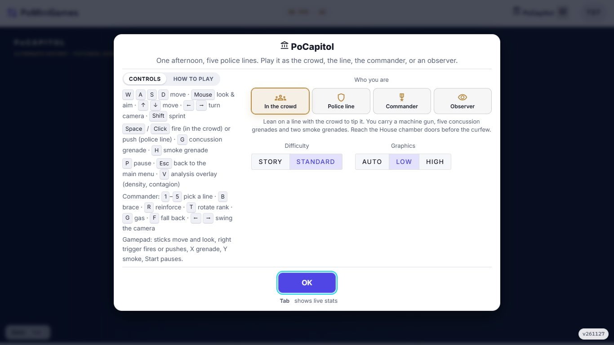
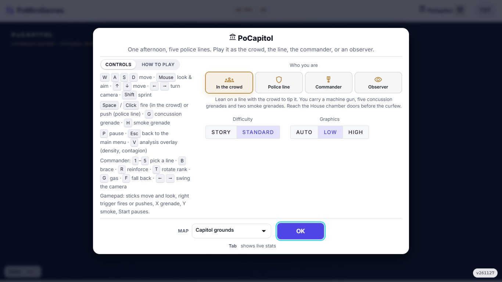
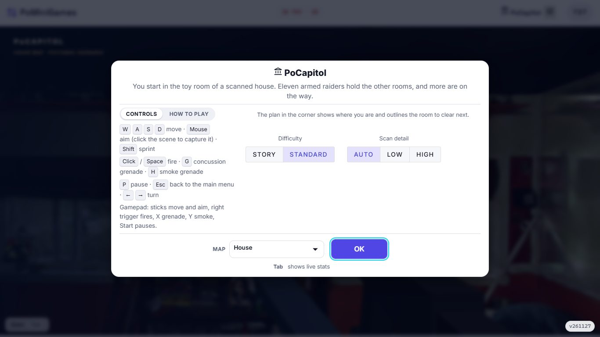
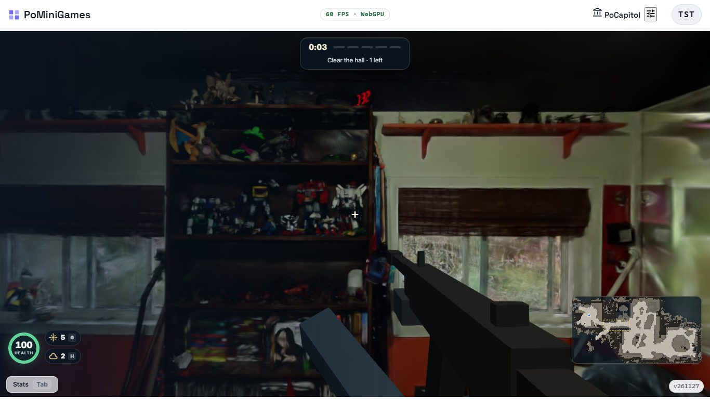
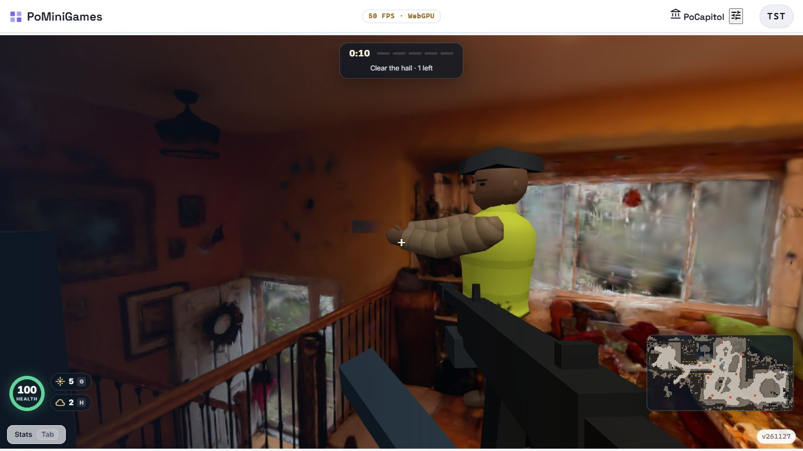
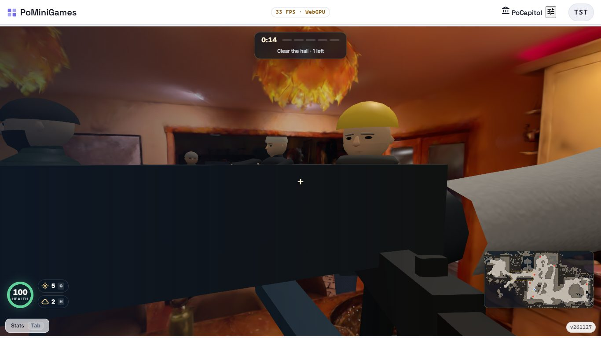
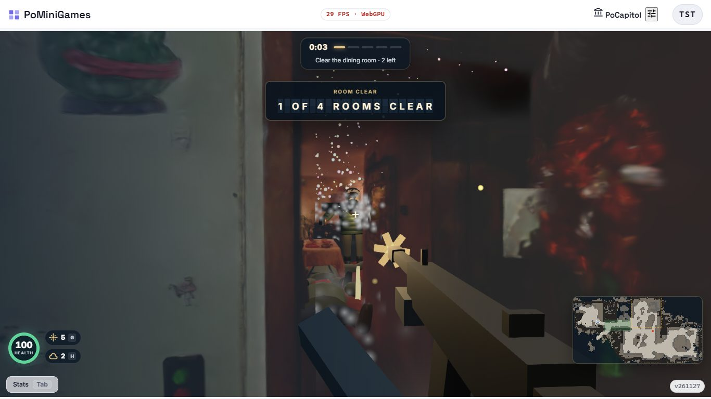
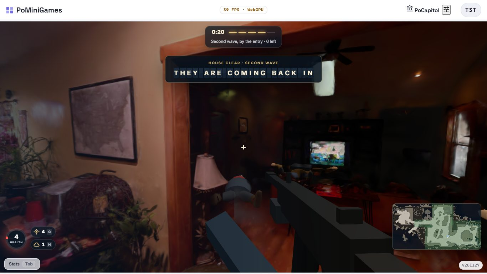
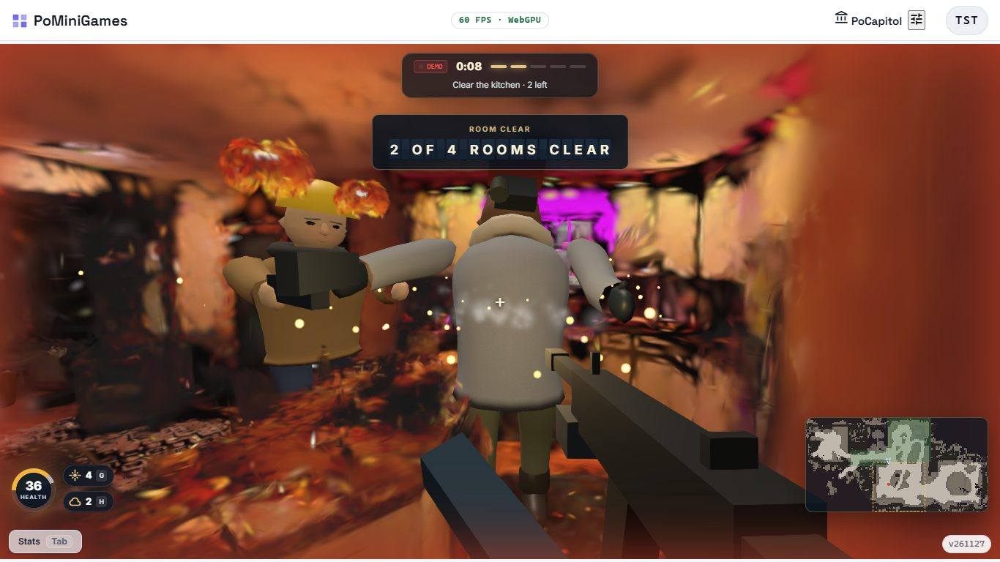
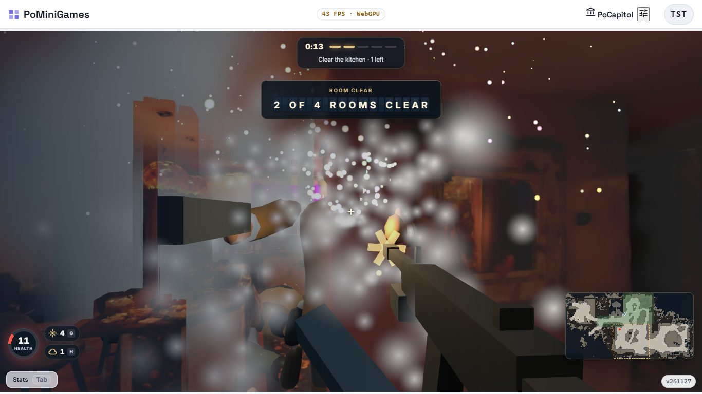
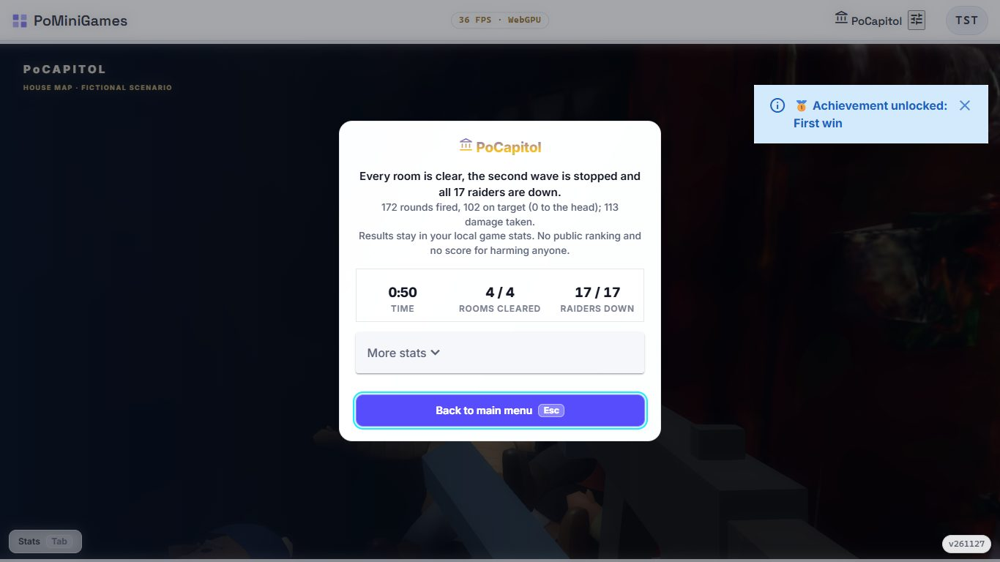
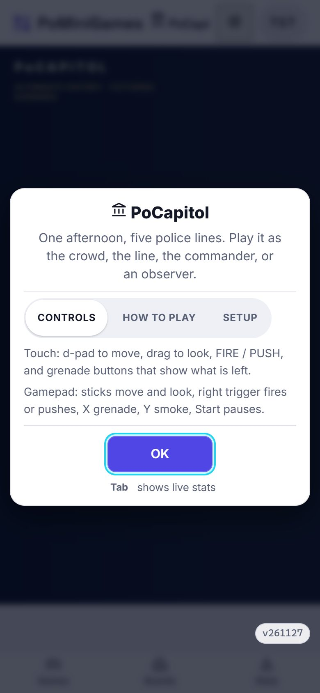
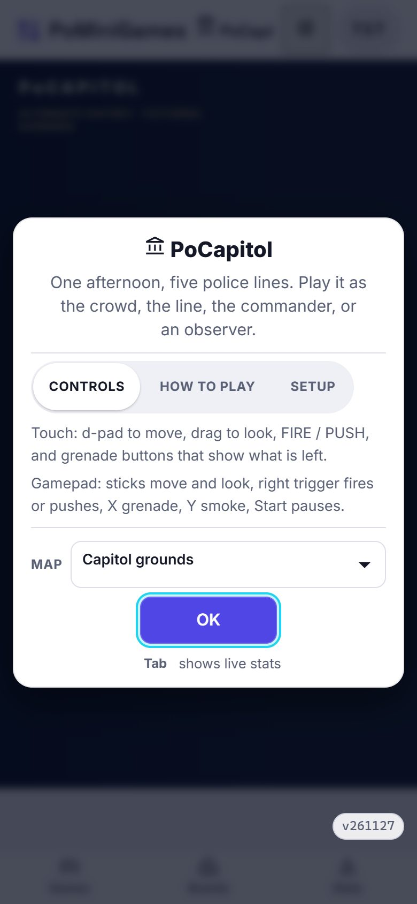
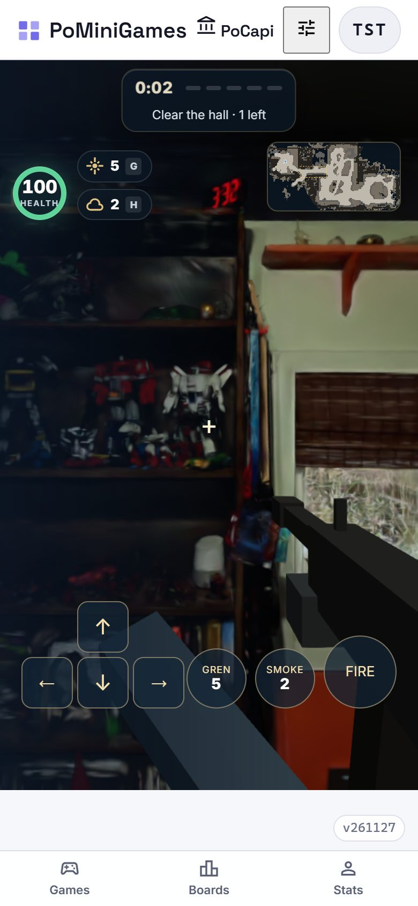